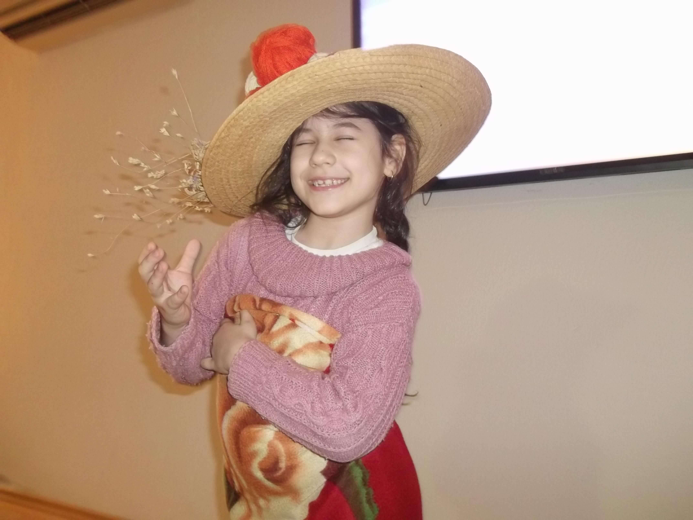
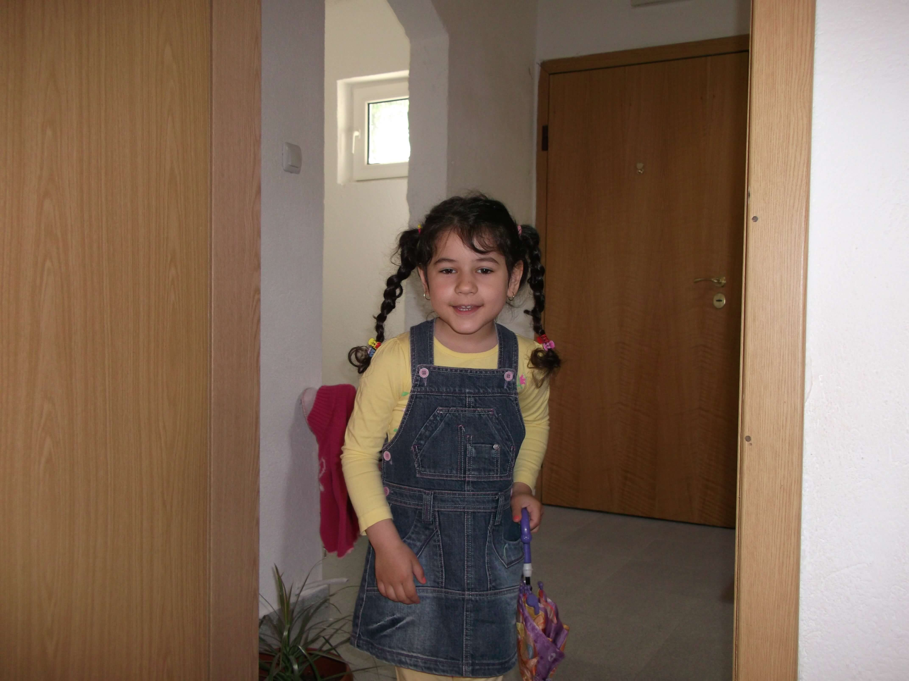
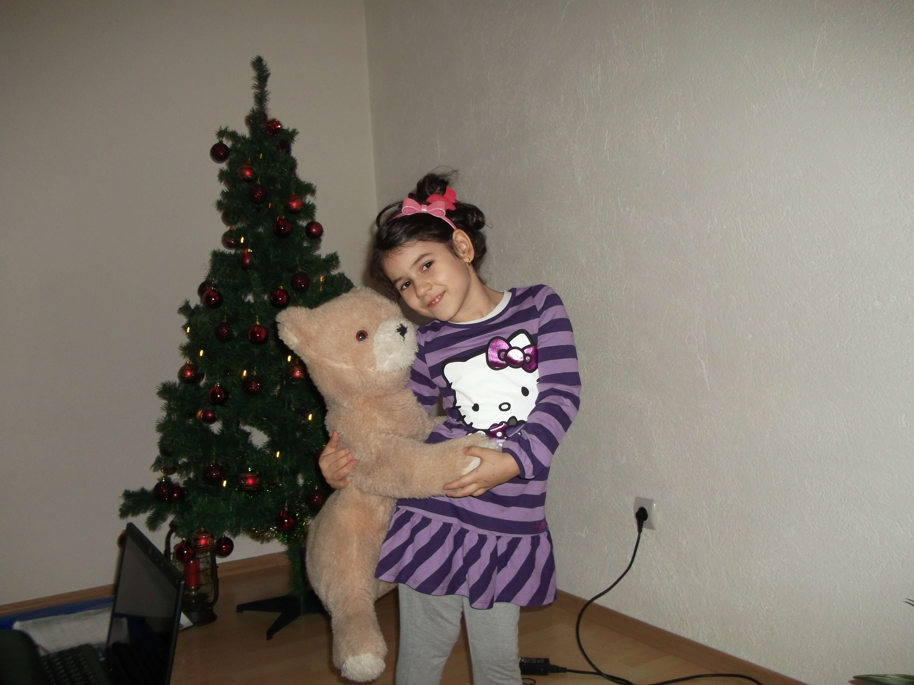
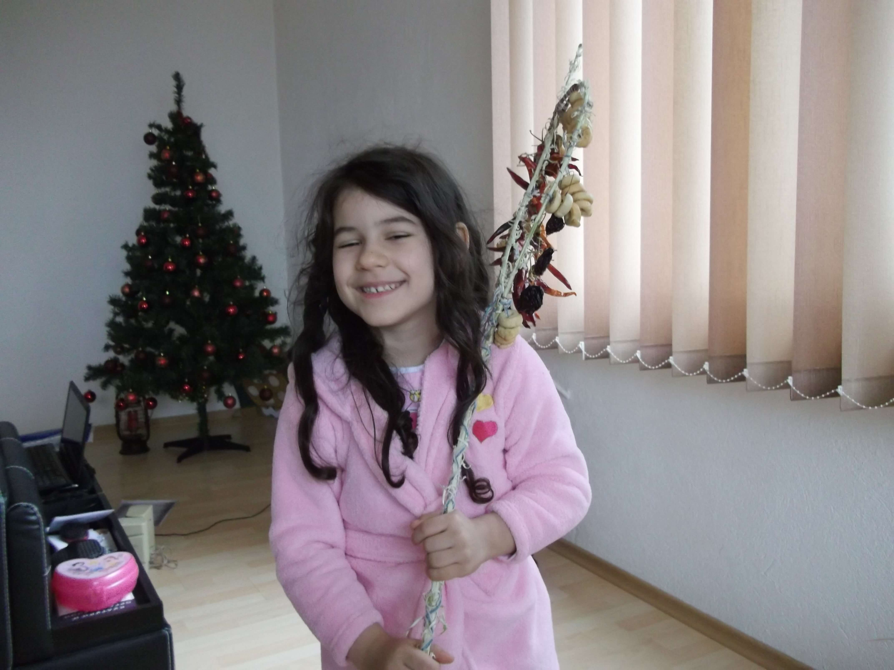
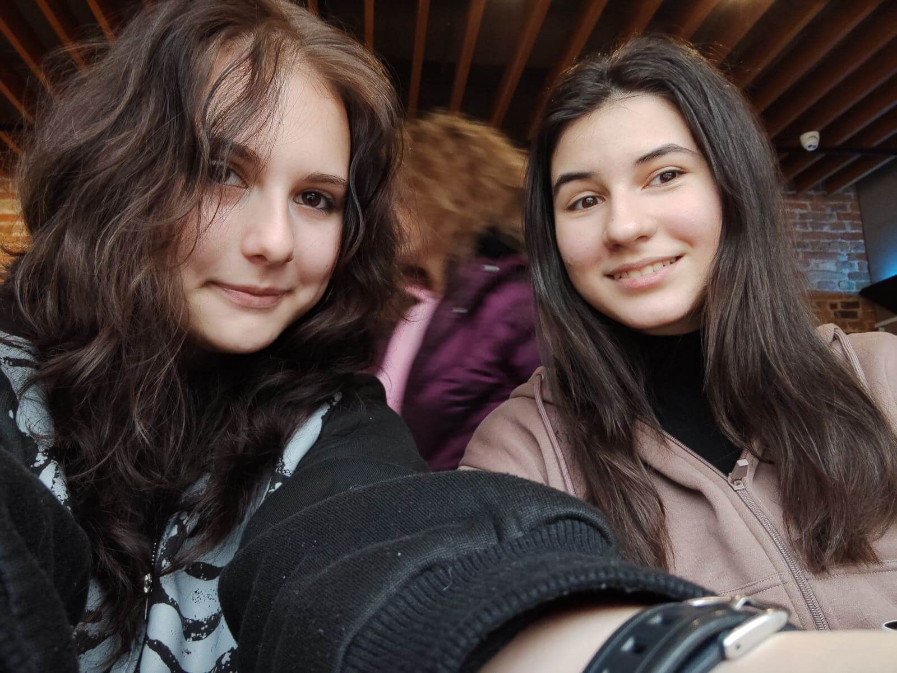
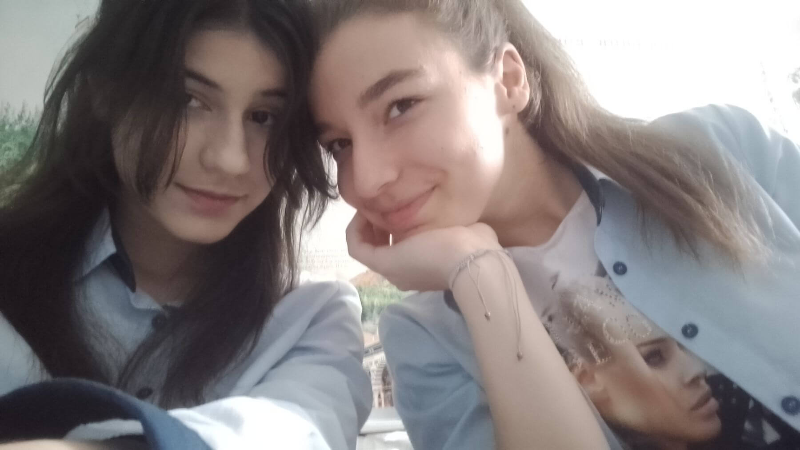
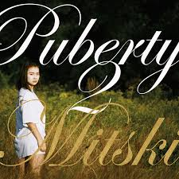
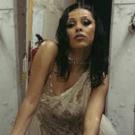
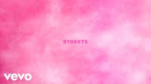
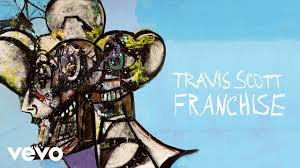

Още от малка бях от децата, които не пускаха нито молива, нито мишката. Рисувах постоянно – на лист хартия или в MS Paint, а през останалото време цъках класики като Friv, FNAF, Purble Place и Minesweeper. По-късно открих и книгите, които ми отвориха вратите към нови светове и дори ме вдъхновиха да пиша свои собствени (макар и забавни за възрастта ми) истории.
Този безгрижен период в НУ "Васил Левски" се промени, когато с майка ми открихме СУЕО "Ал. С. Пушкин". Тъй като тя е учител по ИТ, отиде там на обучение за Scratch, а аз се влюбих в училището от пръв поглед. Преместихме се и двете – тя като учител, а аз като ученичка. Любопитството ми веднага ме тласна към Scratch и така, проект след проект, започнах да навлизам в гейм дев средата, превръщайки любовта си към игрите в нещо мое.




В СУЕО "Ал. С. Пушкин" се запознах с група приятели, които споделяха моите интереси. Единствената разлика беше, че те се бяха насочили към рисуването, а аз – по-скоро към информационните технологии и писането. Там осъзнах, че игрите и рисуването не са единствените дигитални занимания, и започнах да се интересувам от уеб сайтове, програмиране и всички MS програми. Руският език обаче определено не беше моето нещо, което винаги ми подсказваше, че няма да завърша там.
Така неусетно времето излетя и след НВО-тата в 7. клас се озовах пред нов избор. Балът ми не стигна за Математическата гимназия, но пък беше идеален за ВТГ "Г. Ст. Раковски" със специалност "Икономическа информатика". Още от първия ден бях очарована от гимназията. Разбира се, има и хубави, и лоши моменти, но оценявам всеки един от тях.


Музиката винаги е била моето гориво. Някои от най-интересните ми идеи са се раждали именно в моментите, в които слушам любимите си песни. Тя е катализаторът на моята продуктивност – кара проектите ми да оживяват и им вдъхва уникален ритъм. Тук ще видите любимите ми музикални изпълнители и топ 3 песни от тях.



